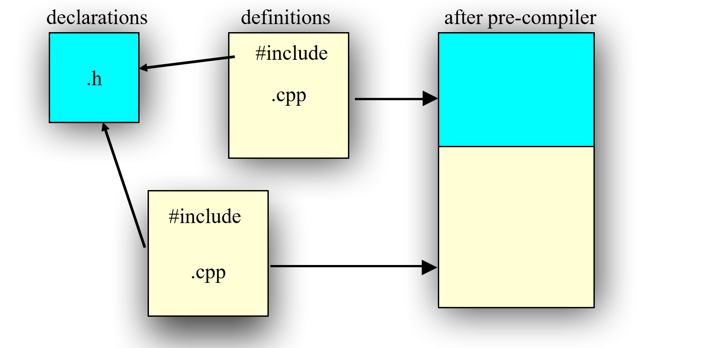
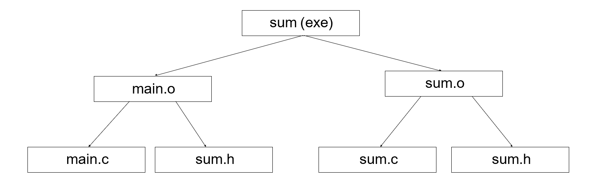

Implementation
待定标题
class 的定义
- Class declaration and prototypes in that class are in the header file (.h).
- All the bodies of these functions are in the source file (.cpp).
编译过程
- The compiler sees only one .cpp file, and generates .obj file
- The linker links all .obj into one executable file
- To provide information about functions in other .cpp files, use .h
因此：
- 函数在头文件中声明：需要在任何需要使用/定义的地方include头文件
- 类同理（一般一个头文件放一个类）
- 头文件（header）=接口（interface）：别人看你的头文件才知道怎么用 
include 写法的区别：
#include “xx.h”:first search in the current directory, then the directories declared somewhere#include <xx.h>:search in the specified directories#include <xx>:same as #include
Tips
- One class declaration per header file
- Associated with one source file in the same prefix of file name.
- The contents of a header file is surrounded with #ifndef #define… #endif
-
pragma once equivalent to #ifndef…#endif
The Makefile utility
用来管理很大的程序（多文件
目标：分成多个部分，方便人和机器管理；发生改动后，最小化编译过程；Easy maintenance of project structure, dependencies and creation
根据时序判断是否需要重新编译，减少开销（根比儿子时间早，则根要更新） 
A makefile is a file (script) containing :（不止于 C 语言）
- Project structure (files, dependencies)
- Instructions for files creation
The make command reads a makefile, understands the project structure and makes up the executable
将树用makefile表示出来：
sum: main.o sum.o#冒号表示依赖
gcc –o sum main.o sum.o
main.o: main.c sum.h # main.c 可省略
gcc –c main.c
sum.o: sum.c sum.h
gcc –c sum.c
宏替换（便于更改）
$@: 上一行的第一个$*: 上一行的所有不包含扩展名的部分
sum: main.o sum.o
gcc –o $@ main.o sum.o
main.o sum.o: sum.h
gcc –c $*.c
# 将会展开为 gcc –c main.c 或 gcc –c sum.c
Tips
- If something is changed, linking is usually necessary
- 在一个 Makefile 中，可以定义多个目标，每个目标有不同的用途和操作。
- 目标 clean 是一个特殊的目标，没有依赖项。它通常用于删除编译过程中生成的中间文件（例如，目标文件 .o、可执行文件等），以清理工作目录。
- 运行 make clean 命令将触发 clean 目标的规则
- make 时可以传入参数，覆盖 makefile 内部参数
make PAR1=1 PAR2=soft1 - 使用变量：
$(VAR_NAME) - 简单的条件语句可以放在 makefile 中
OBJS = main.o another_qsort.o compare.o quicksort.o
# Clean intermediate files clean:
rm *~ $(OBJS)
ifeq (value1, value2)
body of if
else
body of else
endif
Initialize
构造函数与类同名，当对象被创建时，编译器自动调用构造函数
- 可以写多个构造函数，接受不同的参数，采用不同的构造方式
- 缺省构造函数：不接受任何参数的构造函数，对每个成员变量进行初始化
- 如果没有任何构造函数，编译器会创建缺省构造函数
如果定义的构造函数有参数，调用时没给参数，会调用缺省构造函数
但是，一旦你定义了一个构造函数函数，系统就不会自动生成缺省构造函数
此时如果不加参数会报错
class TEST
{
int num;
public:
TEST(int num);
void increment();
~TEST();
};
TEST array[2];// illegal，没有调用构造函数
------------------------
class TEST
{
int num;
public:
TEST(int num=0);
void increment();
~TEST();
};
TEST array[2];// legal，此时 num 初始化为 0
course_id(id), score(score)：这是构造函数初始化列表。它在构造函数的主体之前，使用逗号分隔的方式对类的成员变量进行初始化。在这里，course_id(id) 表示将 course_id 成员变量初始化为传入构造函数的 id 参数的值；score(score) 表示将 score 成员变量初始化为传入构造函数的 score 参数的值。
通过使用构造函数初始化列表，可以直接初始化成员变量，而不需要在构造函数的主体中进行赋值操作。这样做的优点是可以提高代码的效率和可读性。
- Order of initialization is order of declaration
- Not the order in the list!
- Destroyed in the reverse order.
Student::Student(string s):name(s) {}
// initialization
// before constructor
Student::Student(string s):name(s) {}
// assignment
// inside constructor
// string must have a default constructor
- jump可以跳过
- 但编译不允许跳过初始化
Destructor
析构函数：类名前加一个 ~ 的函数
当出了对象作用域时，自动调用析构函数（ } 处调用
int a[5] = {1,2,3,4,5};
int b[6] = {5};
int c[] = {1,2,3,4};
- sizeof c / sizeof *c
struct x { int i; float f; char c; };
- X x1 = {1, 2.2, 'c'};
X x2[3] = { {1, 1.1, 'a'}, {2, 2.2, 'b'} }
struct Y { float f; int i; Y(int a); };
Y y1[] = { Y(1), Y(2), Y(3) };
Overloading
Same functions with different arguments list.
多个同名函数 —— 编译器决定调用哪个
void print(char * str, int width); // #1
void print(double d, int width); // #2
void print(long l, int width); // #3
void print(int i, int width); // #4
void print(char *str); // #5
print("Pancakes", 15);
print("Syrup");
print(1999.0, 10);
print(1999, 12);
print(1999L, 15);
函数的缺省值
- A default argument is a value given in the declaration that the compiler automatically inserts if you don’t provide a value in the function call.
- To define a function with an argument list, defaults must be added from right to left.（奇怪的规则
Stash(int size, int initQuantity = 0);
int harpo(int n, int m = 4, int j = 5);
int chico(int n, int m = 6, int j);//illeagle
int groucho(int k = 1, int m = 2, int n = 3);
beeps = harpo(2);
beeps = harpo(1,8);
beeps = harpo(8,7,6);
Constant objects
const 对象的成员变量不能被修改（直接或间接）
- 只能调用 const 类型的成员函数
- const 成员函数在声明时会带有 const 关键字，并且保证在函数内部不会修改对象的成员变量。
int Date::get_day() const {
day++; //ERROR modifies data member
set_day(12); // ERROR calls non-const member
return day; // ok
}
Class 里面的 const 成员变量 has to be initialized in initializer list of the constructor
如果是编译器需要用到的常量
class HasArray {
const int size;
int array[size]; // ERROR!
...
};
// 解决方法
// Make the const value static:
static const int size = 100;
// static indicates only one per class (not one per object)
// Or use “anonymous enum” hack:
Class HasArray{
enum { size = 100 };
int array[size]; // OK!
…
}
参数调用
void f(Student i);// a new object is to be created in f
void f(Student *p);// better with const if no intend to modify the object
void f(Student& i);// better with const if no intend to modify the object
Student f();// a new object is to be created at returning
// 其他取决于具体实现
tips
- Pass out pointer or reference of the passed in only
- Never new something and return the pointer
Copy Constructor
Stash students(); 是一个函数声明，声明了一个名为 students 的函数，该函数返回一个 Stash 类型的对象，并且不接受任何参数。（不是对象定义和函数调用）
- 拷贝构造：
T::T(const T&) - 没有定义拷贝构造时编译器自动生成
- 自动生成的拷贝变量：每个成员变量自动调用拷贝函数
- 拷贝指针的两种选择：
- 只是拷贝了指针的值，指向的内存还是相同的（原来的内存可能被 free）- 自动生成的
- 把指向的内存也拷贝
#include <cstring> // #include <string.h>
using namespace std;
Person::Person( const char *s ) { // 接受 string 的构造函数
name = new char[::strlen(s) + 1];
::strcpy(name, s);
}
Person::Person( const Person& w ) { // 拷贝构造函数
name = new char[::strlen(w.name) + 1];
::strcpy(name, w.name);
// No value returned
}
Person::~Person() {
delete [] name; // array delete
}
调用拷贝构造（注意分辨 constructions 和 assignment）
void roster( Person ); // declare function
Person child( "Ruby" ); // create object
roster( child ); // call function
Person baby_a("Fred");
// these use the copy ctor
Person baby_b = baby_a; // not an assignment
Person baby_c( baby_a ); // not an assignment
Person captain() {
Person player("George");
return player;
}
Person who=captain()
- 拷贝构造最好自己写，不同编译器不同
- 如果不想要拷贝构造，写一个 private，这样调用时会 generates a compiler error if try to pass-by-value
- 编译器对拷贝的优化
Person copy_func( char *who ) {
Person local( who );
local.print();
return local; // copy ctor called!
}
Person nocopy_func( char *who ) {
return Person( who );
} // no copy needed!
Delegating Ctor
- 在函数内调用其他构造函数
- 不能有 initialization list
- a private ctor can be used to provide initialization to other members.
- It is possible to create a chain of delegating ctors.
Static
两个含义
- 静态存储：地址固定
- 静态变量：全局可见（越少越好）
最好在函数声明时使用，全局变量不推荐使用
Static Objects
- Construction occurs when definition is encountered
- Constructor called at-most once
- The constructor arguments must be satisfied
- Destruction takes place on exit from program
- Compiler assures LIFO order of destructors
Golbal Objects
- 在 main 函数开始前构造
- 在 main 函数结束后调用析构
Static Initialization Dependency
- Order of construction within a file is known
- Order between files is unspecified!
- Problem when non-local static objects in different
- A non-local static object is: – defined at global or namespace scope – declared static in a class – defined static at file scope
在类中 static 变量：所有实例共有，不额外在实例化时分配内存
（不能在静态成员函数访问 static 变量）
visit：
Namespace
很多函数同名时会出问题，因此使用命名空间方便管理，减少冲突
- 命名空间就像类一样是一个作用域
- 仅需要名称封装时首选
- 大括号末尾没有分号
先在头文件里声明
cpp 文件里实现
#include ”MyLib.h”
void MyLib::foo() { cout << "foo\n"; }
void MyLib::Cat::Meow() {
cout << "meow\n";
}
使用：
#include ”MyLib.h”
void main()
{
MyLib::foo();
MyLib::Cat c;
c.Meow();
}
// using 了相应命名空间后
void main() {
using namespace std;
using namespace MyLib;
foo();
Cat c;
c.Meow();
cout << “hello” << endl;
}
// 可以给命名空间改名（太短容易重复
namespace short = supercalifragilistic;
// 也可以只用一点
namespace mine {
using orig::Cat; // use Cat class from orig
void x();
void y();
}
// 可以重复声明
//header1.h
namespace X {
void f();
}
// header2.h
namespace X {
void g(); // X how has f() and g();
}
如果使用了多个命名空间，用同名函数会报错
多文件时会自动合并